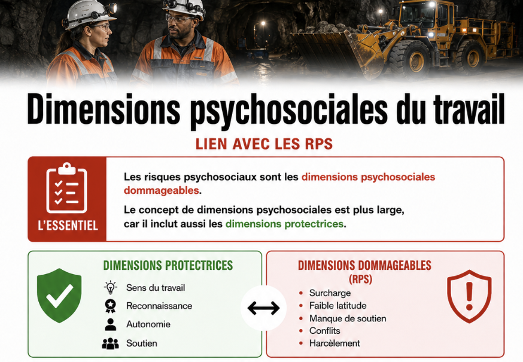

Dimensions psychosociales du travail
Table des matières
L'essentiel : Les dimensions psychosociales du travail sont les aspects relationnels, organisationnels et émotionnels d'une situation de travail. Elles ne s'opposent pas aux dimensions physiques ni techniques : elles s'y ajoutent et interagissent. Ce sont elles qu'on évalue dans une démarche RPS. Comprendre ce concept permet de sortir de l'opposition « sécurité physique vs santé mentale » et d'intégrer les deux dans une approche cohérente.
Définition
Dimensions psychosociales du travail : ensemble des aspects de l'organisation du travail, du contenu des tâches et des relations qui touchent au fonctionnement psychologique et social du travailleur. Elles peuvent être protectrices (favorables à la santé) ou dommageables (RPS).
Le terme « psychosocial » combine
- Psycho : ce qui touche à l'individu (cognition, émotion, motivation)
- Social : ce qui touche aux relations et à l'organisation
C'est volontairement large : ces dimensions traversent tout le travail, pas seulement la santé mentale.
Les grandes dimensions
| Dimension | Aspects observables |
|---|---|
| Organisation du travail | Charge, latitude, autonomie, planification, ressources |
| Contenu des tâches | Variété, sens, complexité, utilisation des compétences |
| Relations professionnelles | Soutien, conflits, climat, communication |
| Reconnaissance | Rétroaction, valorisation, équité |
| Conditions d'emploi | Sécurité d'emploi, perspectives, équité salariale |
| Conciliation vie-travail | Horaires, charge à domicile, contraintes |
| Caractéristiques de l'environnement | Bruit, températures, espaces, équipement |
| Ces dimensions interagissent. Une charge élevée n'a pas le même effet selon la latitude, le soutien et la reconnaissance disponibles. |
Lien avec les RPS

Toucher l'image pour l'agrandir| Dimension psychosociale | RPS associé |
|---|---|
| Charge de travail | Charge de travail élevée |
| Latitude décisionnelle | Faible latitude décisionnelle |
| Soutien social | Soutien social au travail (manque de) |
| Reconnaissance | Reconnaissance et déséquilibre efforts récompenses |
| Conditions d'emploi | Statut précaire et travail atypique |
| Relations | Définition et typologie des conflits au travail, Harcèlement psychologique au travail |
Démarche : un diagnostic RPS sérieux doit couvrir l'ensemble des dimensions, pas seulement les plus visibles. La grille INSPQ structure cette analyse.
Documents et outils
| Document | Type | Source |
|---|---|---|
| Grille INSPQ d'identification des RPS | INSPQ | |
| Norme CSA Z1003-13 et ses 13 facteurs | CSA | |
| Trousse INSPQ de surveillance | INSPQ | |
| Recherches OMS sur la santé mentale au travail | Documents | who.int |
| Voir le centre de ressources : 📁 Documents et outils. |
Pour aller plus loin
Références
- INSPQ. Grille d'identification des risques psychosociaux du travail.
- CSA Z1003-13. Santé et sécurité psychologiques en milieu de travail.
- Vézina, M. et al. (2011). EQCOTESST. INSPQ.
Articles wiki connexes - Définition des risques psychosociaux
- Qualité de vie au travail (QVT)
- Norme CSA Z1003-13
- Grille INSPQ d'identification des RPS
← Accueil
�����������������������������������������������������������������������������������������������������������������������������������������������������������������������������������������������������������������������������������������������������������������������������������������������������������������������������������������������������������������������������������������������������������������������������������������������������������������������������������������
Pages qui pointent ici (5)
- 🔤 Index alphabétique des articles SST psychosociale
- Appréciation du risque, méthodes Sécurité industrielle
- Définition des risques psychosociaux SST psychosociale
- Risques Psychosociaux (RPS) SST psychosociale
- Risques Psychosociaux (RPS) SST psychosociale